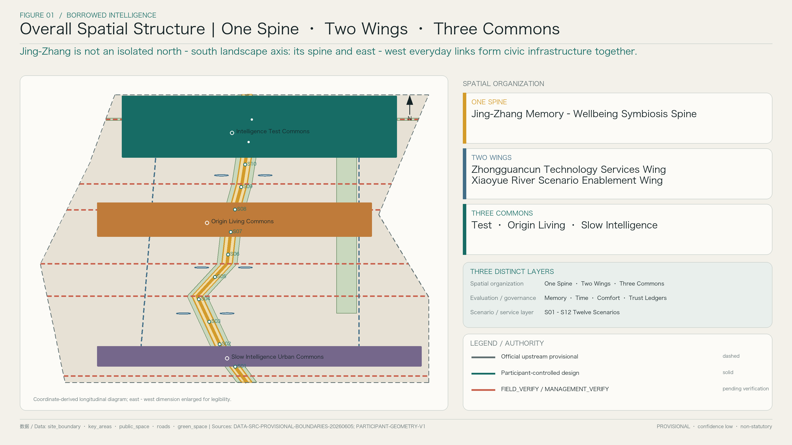
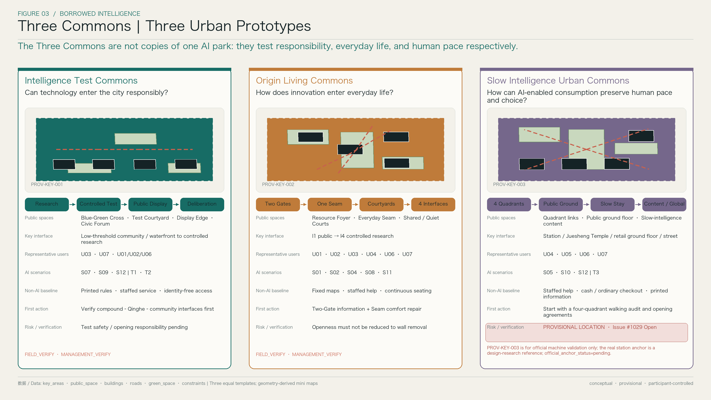
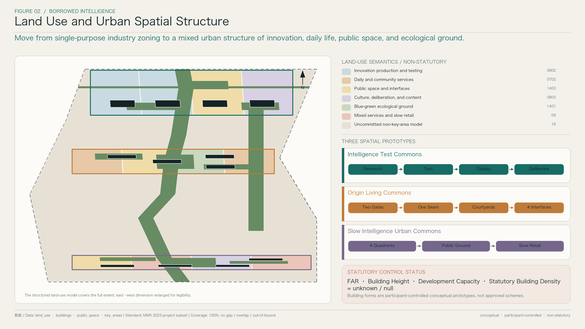
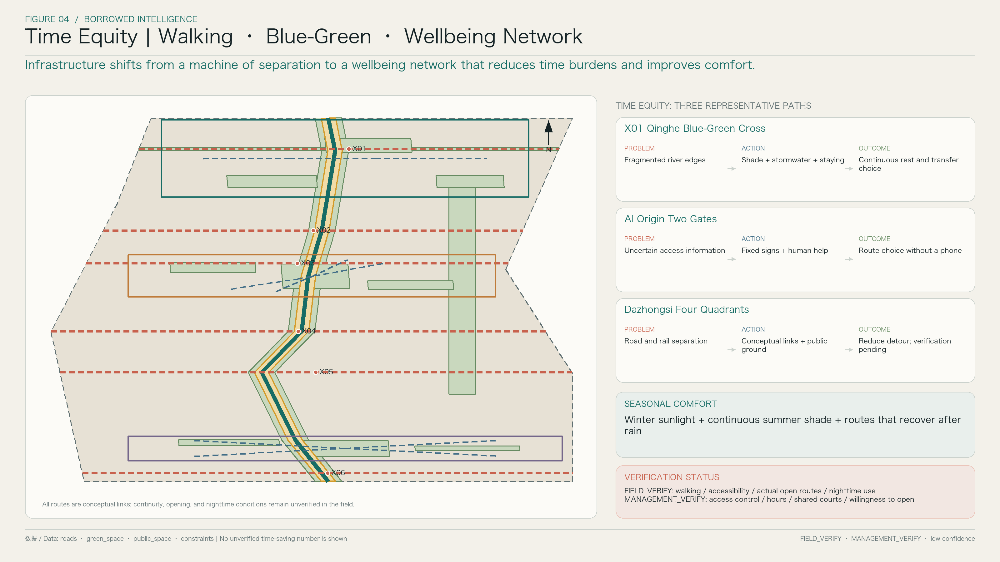
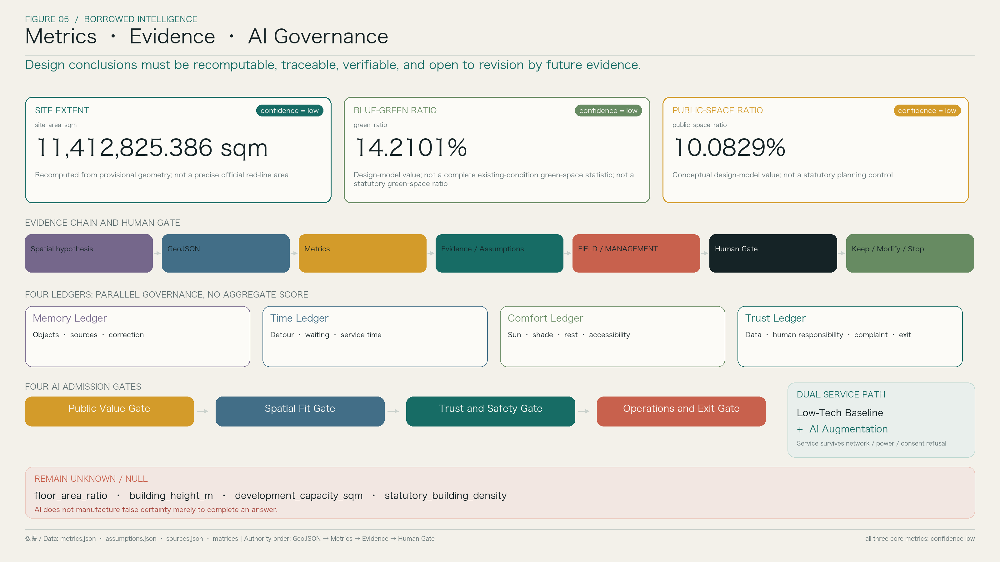

BORROWED INTELLIGENCE
The proposal uses the lived memory of the century-old Jing-Zhang Railway to calibrate urban intelligence and everyday wellbeing to test renewal outcomes. One Spine, Two Wings, and Three Commons organize space; Four Ledgers govern public value; Twelve Scenarios pair a non-AI baseline with accountable AI augmentation; and phased delivery, verification, human responsibility, and exit mechanisms bound implementation risk.
BORROWED INTELLIGENCE
Memory calibrates intelligence. Wellbeing measures the future.
The century-old Jing-Zhang Railway has left genuine memories of engineering, urban change, and everyday life. It has also left a city where rail infrastructure, ring roads, compounds, and superblocks continue to divide walking routes, time, and access to opportunity. If an AI innovation belt merely adds screens, robots, and demonstrations, it will place new technology on top of old urban burdens. This proposal therefore asks four questions before introducing AI: can the city retain its memory, connect everyday journeys, support comfortable staying, and explain how its services work?
Here, “borrowing” is not an imitation of historic form. It is an urban-design method: identify real objects, disclose the burdens created by infrastructure, build relationships across boundaries, secure everyday public services, and then use auditable indicators to recalibrate results over time. The method becomes a spatial organization of One Spine, Two Wings, and Three Commons; a governance framework of Four Ledgers; and a service layer of Twelve Scenarios.
Design Basis and Source List
The proposal takes the Prequalification Announcement for the Centennial Jing-Zhang AI Innovation Belt Open Call for Urban Design as the direct basis for the project name, the three-level scope, the three key areas, and the required design depth. The Agent Open Call Taskbook provides the six tasks concerning naming and identity, ecosystem research, scenarios, public space, culture, and long-term operation. Land use, urban design, regulatory-planning boundaries, and accessibility are addressed through the formal standards registered in the submission package; the design manual does not replace statutory authority.Source Source
The current official repository does not provide a verifiable, precise official GIS or CAD red line. The package uses the maintainers’ provisional boundary and three provisional key-area geometries for generation, recalculation, and machine validation. They are not official red lines, regulatory plans, or implementation boundaries. When official geometry becomes available, the scope, land use, metrics, routes, and phasing must all be recalculated; drawings must never be used to manufacture precise boundaries in reverse.Source Spatial data
The design assets comprise the overall spatial structure, three-park prototypes, Twelve Scenarios, Four Ledgers, and phased projects established in V0.1, together with the seven personas, the “Two Gates, One Seam, Multiple Courtyards, Four Interface Levels” framework, and first projects for AI Origin established in V0.2. V0.3 is a post-submission field-evidence iteration plan, not a completed survey.Source Source Source
Three-Level Scope Framework
The Coordinated Research Area asks why an AI innovation belt should form here. It treats universities, research institutions, enterprises, talent services, capital, and public scenarios as an innovation chain that requires spatial support. The Overall Design Area asks how industrial ambition can become a city that is connected and comfortable in daily use, integrating land use, building prototypes, walking and cycling, blue-green systems, public space, and phasing. The Key-Area Detailed Design Area asks whether three distinct innovation-city prototypes can work in specific places.Standard Depth
These are not three parallel reports. Coordinated research establishes an “industry–space–enablers–governance” mechanism. Overall design translates it into One Spine, Two Wings, and Three Commons. The three key areas then test that mechanism through concrete public spaces, user journeys, paired AI and non-AI pathways, and project triggers. If a key area cannot test or challenge the overall structure, the structure remains only a graphic.Spatial data Depth
The machine-validation area of the current Overall Design Area is 11,412,825.386 sqm. It was independently recalculated in EPSG:4548 from the package’s provisional site geometry and has low confidence. The figure keeps structured data, metrics, and narrative consistent; it must not be interpreted as the precise area of an official red line.Metric Spatial data

Figure 1 | The task relationship among the three scope levels; the illustrated boundary remains provisional.
Coordinated Research Area: Industry and Future City Research
AI enters urban design not because it needs a special architectural style, but because research, open-source collaboration, commercialization, real-world testing, talent’s daily life, and public trust meet at the same urban interfaces. Proximity among universities, laboratories, and firms does not by itself reduce the cost of collaboration. Gates, crossings, accessible ground floors, places to rest, nighttime services, and continuous accessibility determine whether knowledge and opportunity can circulate.Source Depth
The proposal organizes the innovation ecosystem as a five-step loop: universities and research generate ideas → open-source and professional services support collaboration → controlled testbeds verify performance → public display and deliberation build understanding → responsibility enters long-term operation together with the technology. The Zhongguancun Technology Services Wing provides distributed interfaces for professional services, capital, intellectual property, talent support, and international communication. The Xiaoyue River Scenario Enablement Wing defines real problems through community life, blue-green systems, mobility, and everyday services. Technology does not move directly from a research building into public space; it passes through validation, human review, public deliberation, and an exit plan.Spatial data Spatial data
Global comparison follows a common framework of “learn without copying.” Kendall Square, one-north, Paris-Saclay, Toronto MaRS, London Knowledge Quarter, Pittsburgh Robotics Row, and Shenzhen innovation districts are seven candidate verification indexes. Later research will test only six questions: how anchor institutions connect to the city; how shared facilities are operated; how talent’s daily life is supported; how scenarios are opened safely; how communities participate; and how failure is exited. No direct sources for these cases are included in the frozen Evidence Contract, so the names do not support site facts, performance claims, or planning controls. Jing-Zhang’s spatial decisions remain grounded in the local brief, geometry, and design assets.Source
The brand BORROWED INTELLIGENCE treats urban memory and public judgement as external calibrators of intelligence. The logo direction abstracts three motifs: twin tracks, growth rings, and a data pulse. Twin tracks represent infrastructure and east–west reconnection; growth rings represent a century of time; the pulse represents urban learning that can be explained and paused. A low-saturation grayscale base carries real places and evidence, while a single accent color marks direction, interaction, and evidence status. Cyber imagery never substitutes for urban design.Standard
Overall Design Area: Urban Renewal and Regulatory-Plan-Level Urban Design
The spatial structure does not begin with another north–south landscape axis. Railways, roads, rivers, campus and industrial boundaries, and superblocks jointly produce east–west fragmentation. The Jing-Zhang Memory–Wellbeing Symbiosis Spine is therefore first a continuous public-service capacity. Authentic heritage traces, walking and cycling, shade and rain cover, blue-green stormwater functions, rest and assistance, and optional AI support take different forms in different segments while sharing rules for wayfinding, comfort, accessibility, and trust.Spatial data Spatial data
The Two Wings are not new continuous development strips. The Zhongguancun Technology Services Wing provides distributed interfaces for accessible ground floors, short meetings, legal and intellectual-property services, talent support, and international communication. The Xiaoyue River Scenario Enablement Wing brings heat, stormwater, accessibility, care, mobility, and public-service problems into testing. Their shared logic is “open resources → define problems → controlled verification → public deliberation → long-term operation.”Spatial data Spatial data
The Three Commons are three urban prototypes. Intelligence Test Commons asks whether technology can enter the city responsibly. Origin Living Commons asks how innovation enters everyday life. Slow Intelligence Urban Commons asks whether AI-enabled consumption can preserve human pace and choice. The Four Ledgers—Memory Ledger, Time Ledger, Comfort Ledger, and Trust Ledger—belong to evaluation and governance, not spatial zoning. The Twelve Scenarios are repeatable “problem–space–service–governance” products, not twelve sculptural landmarks.Depth Spatial data
The north–south spine only becomes meaningful through six east–west everyday-life stitches: X01 Qinghe Blue-Green Cross, X02 Qinghuadongluxikou Interface, X03 Wudaokou Everyday-Life Interface, X04 Zhichun Road Time-Equity Interface, X05 Dazhongsi Four-Quadrant Interface, and X06 Beijing North Railway Station Urban Gateway. They are conceptual connections subject to field and professional verification—not road red lines, bridge or tunnel alignments, or approved works.Spatial data Spatial data
“Heritage authenticity × wellbeing gain × spatial fit × operational sustainability × public trust” is a conceptual go/no-go threshold. If any dimension is zero, the design does not proceed to the next stage. The multiplication is not used for ranking, does not generate an aggregate score, and does not conceal trade-offs among public values. Proposals continue to be compared through parallel metrics and the Four Ledgers.
The land-use model covers the provisional site boundary completely, with no gap, overlap, or out-of-bound geometry, and uses only permitted classification semantics. AI scenarios, memory nodes, wellbeing nodes, and the Twelve Scenarios remain public-space or operational layers; they are not invented statutory land-use categories.Spatial data Standard
Detailed Design of Key Areas
The Three Commons use the same twelve questions. The purpose is not to impose one image on different places, but to allow comparison of public value, spatial structure, dual pathways, and implementation boundaries. All three stop at the depth of an explainable urban-design prototype. They do not manufacture parcel-level ownership, precise retain-renovate-demolish decisions, statutory height, or committed development scale. Matters lacking field or management evidence are marked FIELD_VERIFY or MANAGEMENT_VERIFY.Depth Source
Intelligence Test Commons
| Common question | Design response |
|---|---|
| 1. Positioning | A garden-oriented, full-stack innovation district focused on whether technology can enter the city responsibly, connecting research capacity to verification processes the public can understand. |
| 2. Current urban problem | The North Fifth Ring Road, railway, Qinghe River, and compound boundaries overlap. Actual entrances and continuous links among research spaces, communities, the waterfront, and everyday public space remain to be verified. |
| 3. Spatial prototype | A sequence of research core → controlled test courtyard → public display → deliberation and standards exchange. Openness increases only as risk decreases. |
| 4. Key public spaces | A blue-green cross, non-AI everyday loop, controlled test courtyard, public display edge, and Civic Intelligence Forum form a testbed that can be entered, observed, and discussed. |
| 5. Key interfaces | The waterfront and community side stays low-threshold. The research and testing side uses booking, legible rules, and safety boundaries. Visibility must not be misrepresented as unrestricted access to a laboratory. |
| 6. Users and scenarios | U03 AI researchers and start-up teams and U07 operators and community organizers are production partners. U01, U02, U06, and other public users observe, apply, comment, and oversee through S07, S09, and S12. |
| 7. AI augmentation | Edge devices assist environmental sensing and accessibility services. Booking systems disclose hours, rules, risks, and results. People handle exceptions, and accountable organizations review published information. |
| 8. Non-AI baseline | Printed rules, physical noticeboards, staffed service, and offline applications remain available. Shade, seating, drinking water, toilet directions, and help do not depend on a smartphone, connectivity, or data authorization. |
| 9. First project triggers | Verify the compound–Qinghe–community interfaces first; then introduce one reversible, identity-free edge-service pilot, a set of Deliberation Tables, and Open Data Markers. |
| 10. Implementation conditions | Confirm the official extent, actual entrances, river and railway conditions, ecology and fire-safety boundaries, and establish responsibility for test safety, energy, maintenance, insurance, and termination. |
| 11. Risks | Excessive data collection, testing accidents, energy and maintenance costs, and confusing public display with unrestricted laboratory access can all undermine trust. |
| 12. Verification items | Walking, accessibility, waterfront, and nighttime continuity are FIELD_VERIFY. Access-control hours, willingness to open tests, accountable operators, and publication procedures are MANAGEMENT_VERIFY. |
The first objective is not the “most advanced” demonstration. It is an urban validation protocol that the public can understand, developers can follow, managers can pause, and all parties can exit. T1 Edge Public-Service Testbed and T2 Accessibility and Operations Testbed begin here. Every test must pass the Public Value Gate, Spatial Fit Gate, Trust and Safety Gate, and Operations and Exit Gate before it enters public space.Spatial data Spatial data
Origin Living Commons
| Common question | Design response |
|---|---|
| 1. Positioning | The established structure of Two Gates, One Seam, Multiple Courtyards, and Four Interface Levels organizes innovation and everyday life and asks how innovation enters daily routines. No new spatial concept is added. |
| 2. Current urban problem | Compounds, campuses, and communities have unequal boundaries, access, time, and service information. Actual open routes, access controls, and nighttime conditions have not yet been jointly verified. |
| 3. Spatial prototype | North and South Gates become urban resource entrances; one Everyday-Life Seam links them; multiple courtyards support resources, deliberation, quiet use, and sharing; four interface levels move from fully public to controlled research space. |
| 4. Key public spaces | The Two Gates are staffed and legible public foyers. The Seam is a continuous everyday route. Multiple Courtyards use shared courts and public ground floors for rest, exchange, care, and small events. |
| 5. Key interfaces | I1 Urban Public Interface, I2 Community Shared Interface, I3 Booked Collaboration Interface, and I4 Controlled Research Interface. Openness is not wall removal; permissions must be readable. |
| 6. Users and scenarios | U01, U02, U03, U04, U06, and U07 share one everyday route through S01, S02, S04, S08, and S11. Access depth and service modes vary by need, not by technological identity. |
| 7. AI augmentation | The Resource Foyer offers explainable search; navigation presents choices by time and ability; the Civic Deliberation Agent organizes issues but does not replace facilitation, voting, or appeal. |
| 8. Non-AI baseline | Fixed maps, clear signs, printed event sheets, staffed information, accessible ramps, and continuous seating remain effective. Refusing authorization does not reduce the level of basic service. |
| 9. First project triggers | Implement only the mature package: information upgrades at the Two Gates, comfort repair along the Seam, signs for the Four Interface Levels, and one Shared Courtyard pilot. Do not deepen the structure further. |
| 10. Implementation conditions | The compound, community, campus, and property managers must confirm opening boundaries, fire egress, routine maintenance, event booking, data responsibility, and conflict-resolution procedures. |
| 11. Risks | “Openness” may be reduced to removing boundaries; AI navigation may promise false access; deliberation summaries may be biased; and event traffic may displace community routines. |
| 12. Verification items | Continuous walking, accessibility, and nighttime experience between the Two Gates are FIELD_VERIFY. Access control, courtyard opening, shared ground floors, and operating staff are MANAGEMENT_VERIFY. |
AI Origin is not a showroom foyer for a technology park. It is a set of everyday interfaces that translates research resources into services ordinary people can enter. The Four Interface Levels tell people where access is open, where booking is required, and where research must remain controlled. The Everyday-Life Seam tests whether the Two Gates are truly connected through time, shade, rest, and assistance.Spatial data Spatial data Source
Slow Intelligence Urban Commons
| Common question | Design response |
|---|---|
| 1. Positioning | A slow-intelligence urban prototype for commuting, culture, retail, content, and international exchange, asking how AI-enabled consumption and city life can preserve human pace and choice. |
| 2. Current urban problem | Rail, roads, superblocks, and station interfaces divide activity into four quadrants. The current official provisional anchor has a known positional discrepancy from the real Dazhongsi design-research location. |
| 3. Spatial prototype | Four-quadrant connections → public ground floor → slow walking and staying network → AI-native retail and content spaces → international exchange spaces. A single landmark cannot replace connectivity. |
| 4. Key public spaces | Quadrant connection points, public ground floors, slow-stay routes, a content courtyard, and an international-exchange interface form a conceptual public-space set. Exact placement awaits confirmation of the official anchor. |
| 5. Key interfaces | Interfaces among the station, the cultural setting of Juesheng Temple, commercial ground floors, and streets remain legible, stoppable, and bypassable. Digital installations do not obscure heritage interpretation. |
| 6. Users and scenarios | U04 commuters and night-shift workers, U05 visitors, U06 users with different abilities, and U07 local businesses and operators use S05, S10, and S12 to understand time, choice, and responsibility. |
| 7. AI augmentation | Navigation provides routes for different speeds and abilities; retail assistance explains recommendations and commercial relationships; content spaces provide multilingual interpretation; people can take over critical services. |
| 8. Non-AI baseline | Fixed wayfinding, staffed information, cash and ordinary checkout, printed menus, and cultural explanations remain available. No smartphone, network failure, or refusal of personalization can reduce basic service. |
| 9. First project triggers | Before the official anchor is confirmed, undertake only a four-quadrant walking audit, public-ground-floor agreements, and slow-intelligence retail rules. Make no station-level or parcel-level construction commitment. |
| 10. Implementation conditions | The official key-area anchor must be confirmed. Rail, road, heritage, commercial, and property stakeholders must verify ownership, fire safety, passenger flow, engineering, and long-term operating conditions. |
| 11. Risks | Geometry displacement may be mistaken for a real design boundary; recommender systems may erode choice; commercial content may masquerade as public information; and nighttime activity may affect surrounding daily life. |
| 12. Verification items | Four-quadrant walking, accessibility, crossings, and nighttime staying are FIELD_VERIFY. Public ground floors, retailer participation, opening hours, and international-event operation are MANAGEMENT_VERIFY. |
Dazhongsi strictly follows a dual-track mechanism. PROV-KEY-003 is used only as the organizer-provided / official repository provisional geometry for machine validation. Dazhongsi Station, Juesheng Temple, and the four-quadrant walking relationships are only real design-research references and cannot be written back as an official boundary. The fixed status remains official_anchor_status=pending and official_validation_geometry_not_equal_real_design_research_location; Issue #1029 remains Open. When the organizer confirms the official anchor, the related geometry, metrics, and narrative must be recalculated together.Source Spatial data Spatial data

Figure 2 | The Three Commons are compared through the same questions; the Dazhongsi diagram does not alter its dual-track status.
AI Innovation Ecosystem, Personas, and AI+ Scenarios
The seven personas are not marketing segments. They test spatial equity through different schedules, abilities, work patterns, and care responsibilities: U01 Nearby Older Residents and Caregivers; U02 Children, Young People, Students, and Families; U03 AI Researchers, Developers, and Start-up Teams; U04 Cross-District Commuters, Service Workers, and Night-Shift Workers; U05 Heritage Visitors, Urban Explorers, and International Visitors; U06 Wheelchair Users, People with Visual or Hearing Impairments, and Sensory-Sensitive Users; and U07 Local Small Businesses, Community Organizers, and Public-Space Operators. All seven participate in evaluation. Digital fluency never determines the right to basic service.Source Standard
The Twelve Scenarios turn abstract AI into auditable everyday services. Each begins with a public service that does not depend on a smartphone, connectivity, or data authorization, and then states what AI may add. During network failure, power outage, model failure, or refusal of data authorization, the non-AI baseline must not degrade.
| Scenario | Priority users and location | Non-AI baseline | AI augmentation and human / exit boundary |
|---|---|---|---|
| S01 Century Memory Lens | U01, U02, U05; Spine and AI Origin | Authentic remains, a timeline, printed maps, and human interpretation | Multilingual, accessible, and personalized interpretation; sources stay visible and generated content cannot replace historical review. |
| S02 Quiet Borrowed-View Route | U01, U04, U06; Spine and Everyday-Life Seam | Continuous signs, a quiet alternative route, seating, and shade | Suggest routes by noise, crowding, and sensory preference; users can disable location and use a fixed map. |
| S03 All-Season Comfort Route | All users; Spine and Three Commons | Shade, rain cover, drinking water, rest points, and seasonal maintenance | Suggest comfortable routes using microclimate information; fixed signs and human inspection take over when equipment fails. |
| S04 Barrier-Free Together | U01, U06; six stitches and Two Gates | Ramps, tactile and high-contrast information, continuous rest, and human assistance | Help detect obstacles and suggest accessible routes; prediction must not be presented as verified accessibility. |
| S05 Time-Equity Navigation | U01, U04, U06; stations and Dazhongsi | Standard maps, service times, staffed information, and route options | Show walking, waiting, detour, and care costs; users may choose fastest, most reliable, or least-transfer routes. |
| S06 Public-Space Steward | U07 and all users; Spine and Three Commons | Inspection sheets, cleaning and repair requests, notices, and a staffed hotline | Aggregate facility status and work orders, with human confirmation of exceptions; no default facial recognition. |
| S07 Blue-Green Civic Twin | U02, U03, U07; Zhongzhiyuan and river links | Rain gauges, planting information, human monitoring, and evacuation rules | Assist observation of ponding, heat, and plant condition; models support maintenance judgement but do not replace engineering conclusions. |
| S08 Civic Deliberation Agent | U01, U02, U06, U07; AI Origin courtyards | In-person meetings, paper comments, human facilitation, and public minutes | Assist synthesis without replacing voting; provide correction, appeal, deletion, and version records. |
| S09 Open Test Booking | U03, U07, and the public; Zhongzhiyuan | On-site notices, paper applications, and human safety briefings | Match time and capability and disclose risk and results; refusal of data does not affect offline application. |
| S10 Slow-Intelligence Retail Assistant | U04, U05, U06, U07; Dazhongsi | Ordinary menus, cash and standard checkout, staffed advice, and clear prices | Explain recommendations, allergens, and commercial relationships; personalization can be disabled and must not enable profile-based price discrimination. |
| S11 Innovation Resource Foyer | U03, U07, and communities; AI Origin Two Gates | Service directories, fixed opening hours, and human referrals | Assist matching with spaces, mentors, and professional services; make no outcome promise and route sensitive requests to people. |
| S12 Public Wellbeing Ledger | All users; Three Commons and overall gateways | Periodic disclosure, printed reports, hearings, and complaint channels | Display only aggregate metrics, sources, and uncertainty; never reveal individual traces or hide trade-offs in a total score. |
Three industry tests connect the ecosystem to spatial implementation. T1 Edge Public-Service Testbed tests low-data, offline-capable navigation, information, and environmental services. T2 Accessibility and Operations Testbed tests the loop from detecting a barrier, through human confirmation, to repair feedback. T3 Intelligent Retail and Content Testbed tests transparent recommendations, multilingual content, ordinary checkout, and opting out of personalization. Zhongzhiyuan, AI Origin, and Dazhongsi are priority settings respectively, but no test belongs exclusively to one place.Spatial data Spatial data
Every test and every scenario passes the Public Value Gate, Spatial Fit Gate, Trust and Safety Gate, and Operations and Exit Gate in sequence. If one gate fails, the service returns to its non-AI baseline or stops. Urban intelligence is not measured by the number of devices, but by whether a service can explain whom it serves, what data it uses, who is responsible, how it fails, and how people can exit.Standard
Land Use, Building Scale, and Retain-Renovate-Demolish Strategy
Topological completeness is the first priority of the current land_use model. It covers 100% of the provisional site boundary, with no gap, overlap, or out-of-bound geometry. It uses official classification semantics to express overall land relationships. One Spine, Two Wings, and Three Commons, the Twelve Scenarios, wellbeing nodes, and memory nodes are expressed through public-space, operational, or design attributes and never become invented statutory land-use codes.Spatial data Standard
The building layer expresses only comparable spatial types. Zhongzhiyuan includes a research core, controlled laboratory space, public display, and standards exchange. AI Origin includes a Resource Foyer, deliberation space, quiet space, and Shared Courtyard interfaces. Dazhongsi includes public ground floors, content spaces, slow-intelligence retail, and an international-exchange prototype. These types test public ground floors, shared spaces, and courtyard relationships; they are not approved building schemes.Spatial data Spatial data
The qualitative Demolish–Renovate–Retain Strategy identifies value and responsibility before deciding physical action. Spaces with heritage, everyday-service, or adaptive-reuse value are retained first. Underperforming spaces whose structure and ownership permit adaptation are renewed first. New construction or demolition is discussed only after safety, public value, and alternatives have been verified. The proposal does not manufacture exact actions, ownership, Building Height, Floor Area Ratio, Building Coverage Ratio, development capacity, or committed construction quantities.Depth Standard
Accordingly, floor_area_ratio, building_height_m, development_capacity_sqm, and statutory_building_density all remain unknown / null. The proposal provides only qualitative urban-design guidance: prioritize public ground floors; treat railway and heritage interfaces cautiously; avoid oppressive massing on important view corridors; and preserve daylight and ventilation in shared courtyards. Values will be recalculated only when official red lines, cadastral records, existing-building surveys, and statutory plans become available. Rendered appearance will not be used to infer numbers.Depth

Figure 3 | Conceptual land-use structure; it provides neither statutory land-use decisions nor parcel-level conclusions.
Transport, Rail, Municipal Infrastructure, and Public Services
The mobility strategy replaces speed alone with time equity. The Jing-Zhang Memory–Wellbeing Symbiosis Spine provides a north–south Walking and Cycling Network. Six east–west everyday-life stitches, X01–X06, connect rivers, communities, compounds, campuses, stations, and urban gateways. Each stitch tests detour, crossing, waiting, rest, and nighttime legibility for ordinary pedestrians, wheelchair users, and care journeys. Conceptual alignments are not road red lines, bridge or tunnel works, or completed connections.Spatial data Spatial data
Transit interfaces follow “low-tech first, AI augmentation second.” Fixed direction signs, clear exit numbers, staffed information, continuous shade, and accessible rest points must work first. S05 may then offer route choices for different speeds and abilities, S04 may assist in identifying barriers, and S06 may aggregate facility work orders. Navigation reports only verified conditions or conditions explicitly marked for verification; algorithmic advice never replaces confirmation by operators and professional authorities.Standard Spatial data
Continuous walking conditions, accessibility continuity, actual open routes, and nighttime accessibility remain FIELD_VERIFY. Entrance opening, access-control hours, shared ground floors, and coordination among transit and compounds remain MANAGEMENT_VERIFY. After first submission, V0.3 will gather evidence during weekday peaks and off-peaks, at night, through joint audits with users of different abilities, and after rain. Seasonal observations enter longer-term verification; none is represented as already completed.Source
Municipal and New Infrastructure is limited to service principles: edge-first processing, minimum data collection, tiered power supply, visible failure, human takeover, maintainable access, and removability. Underground works, integrated utilities, bridge and tunnel alignments, structural loads, equipment capacity, and investment remain unknown because professional base data and ownership information are absent. Conceptual geometry is not an engineering-feasibility conclusion.Depth Spatial data

Figure 4 | The walking–blue-green network; conceptual connections are neither road red lines nor engineering alignments.
Blue-Green Network, Public Space, and Urban Character
The blue-green system is not an infill drawing intended to complete an existing-condition statistic. It is a conceptual design model. The Jing-Zhang Spine prioritizes continuous shade and walking conditions that can recover after rain. Qinghe River and Xiaoyue River support regional blue-green links. Rain gardens, pocket green spaces, Shared Courtyards, and buffer planting improve microclimate and staying conditions in the Three Commons. Planting follows Beijing’s principle of the right plant in the right place, using drought- and cold-tolerant, multilayered, low-maintenance communities while pursuing winter sunlight and summer shade. Large-tree conditions, soil depth over underground structures, and structural capacity require later professional review; no engineering-feasibility conclusion is made now.Spatial data Depth
The recalculated union area of blue-green space is 1,621,773.893 sqm, and green_ratio is 14.2101%, with low confidence. It is a design-model value, not a complete existing-condition green-space statistic, and not a statutory green-space ratio. OSM and the currently available public sources do not fully cover internal green space in Beijing’s compounds, residential areas, and courtyards. Every comparison and later target must retain this evidence boundary.Metric Source
Seven repeatable public-space components establish a coherent but non-uniform character. Memory Trace marks authentic time and direction. Borrowed-View Frame supports looking, resting, and explanation. Wellbeing Shelter combines shade, rain cover, seating, drinking water, printed information, and human assistance. Barrier-Free Station provides ramps, tactile information, high contrast, and rest. Deliberation Table supports workshops, community meetings, exhibitions, and developer exchange. Blue-Green Edge combines stormwater, ecology, and sittable boundaries. Open Data Marker explains sources, service limits, equipment status, complaints, and exit routes. Components are combined in response to place rather than deployed as one standard kit over real differences.Source Spatial data
Material decisions follow safety and authenticity. Old railway sleepers are not used as touchable public-space surfaces in principle; only after contamination assessment may they be considered for commemorative display or non-contact elements. Ballast does not enter children’s play areas or sitting surfaces. Memory Trace uses contrasting permeable brick or stone inlays first. If metal is necessary, it must be slip-resistant and kept away from ramps and priority crossing paths. Cultural expression begins with traceable remains, archives, and oral histories rather than simulated historic elements.Standard
The three AI pilgrimage landmarks are usable and updatable public-knowledge interfaces, not giant sculptures. Memory Zero introduces the city through the Jing-Zhang timeline and authentic remains. Civic Intelligence Forum hosts open-source releases, standards discussions, international exchange, and public deliberation. Wellbeing Clock discloses aggregate answers to “whose time was saved and whose daily life improved” without showing personal data. The honor system recognizes verifiable public contributions—accessibility repair, open data, low-energy service, responsible exit, and community co-production—rather than ranking places by traffic or device counts.Standard
Jing-Zhang railway culture, Zhongguancun innovation culture, and emerging AI culture share one wayfinding language. A grayscale base carries authentic objects and time; an accent color marks direction, service, and evidence status. Physical signs come first and digital content remains optional. Every interpretive point answers five questions: what is this, where does the information come from, how is it used today, who is responsible, and how can it be corrected? Cultural narrative and public service calibrate each other rather than becoming decoration.Source
Renewal Projects, Implementation Policy, and Phasing
Implementation keeps the established four phases and does not substitute one-time construction for continuing governance. Phase 0, Data and Consensus, confirms official boundaries and establishes field evidence, management agreements, and a public baseline. Phase 1, Low-Cost Wellbeing Repair, prioritizes wayfinding, rest, shade, accessibility breaks, and feasibility of the six stitches. Phase 2, Three Commons and AI Pilots, introduces small, pausable tests under the Four AI Admission Gates. Phase 3, Network and Brand, extends only projects that have demonstrated public value, accountable responsibility, and operational capacity across the full belt.Spatial data Spatial data
| Phase | First projects and deliverables | Condition for entering the next phase |
|---|---|---|
| Phase 0 | Organizer geometry updates, V0.3 field audits, heritage inventory, Four-Ledger baseline, management and data-responsibility agreements | Scope and sources are traceable; FIELD_VERIFY and MANAGEMENT_VERIFY items have an accountable party and date. |
| Phase 1 | Two-Gate and Spine wayfinding, seating and shade, Barrier-Free Stations, Wellbeing Shelters, and minor repairs for the six stitches | Basic service works without AI; maintenance and complaint routes are usable. |
| Phase 2 | T1–T3, first combinations of the Twelve Scenarios, public ground floors, and controlled test courtyards | All Four AI Admission Gates pass; human takeover, shutdown, and exit drills work. |
| Phase 3 | One-Spine–Two-Wings network, three landmarks, annual events, and a scenario-opening network | Long-term budgets, operating entities, public performance reporting, and retirement mechanisms exist; short events do not substitute for maintenance. |
Implementation policy follows “small agreements before large works.” Time, responsibility, and maintenance agreements enable limited public-ground-floor access. Data minimization, safety responsibility, insurance, and exit clauses govern scenario testing. Communities and users with different abilities enter decisions through compensated co-design and review. Developers receive clear APIs, site rules, and negative lists. Railway, heritage, river, road, and underground works must enter the relevant professional and statutory processes; the proposal makes no unauthorized commitment.Depth Standard
Long-term brand assets combine annual events + developer community + open scenario operation + public honors. An annual Jing-Zhang Responsible Urban Intelligence Week can first publish the Four Ledgers and scenario questions, then open small tests, followed by public experience, an international standards roundtable, and a review of failures. The developer community maintains a problem library, open-source tools, and exit cases. Scenario operators disclose hours, capabilities, risks, and results. The city brand inherits only verified public value; hardware left after a short exhibition does not count as an urban-renewal outcome.Source
Responsibility advances with each phase. Planning and sector authorities confirm boundaries and procedures. Subdistrict and community bodies organize public participation. Owners and property managers carry site-safety and maintenance duties. Technology providers are responsible for models, data, and shutdown. Independent reviewers examine accessibility, equity, and privacy. If the operating entity, budget, human takeover, or exit cost cannot be identified, a project remains in the previous phase.Depth
Metrics, Area Recalculation, and Compliance Matrix
Metrics are presented in three parallel groups. Spatial outcomes cover the scope area, union areas of blue-green and public space, and continuity of the walking network and everyday-life stitches. Everyday wellbeing measures detour, waiting, rest, shade, accessibility, and service availability for different users. Trust and implementation measure traceable sources, non-AI availability, human review, complaints, shutdown, exit, and long-term maintenance. The three groups are not combined into a total score, because strength in one group must not conceal harm in another.Depth Source
| Core metric | Frozen value | Confidence and interpretation boundary |
|---|---|---|
site_area_sqm | 11,412,825.386 sqm | low; recalculated from provisional site geometry in EPSG:4548, not the precise area of an official red line |
| Blue-green-space union area | 1,621,773.893 sqm | low; conceptual design-model extent, deduplicated through union |
green_ratio | 14.2101% | low; design-model value, not a complete existing-condition statistic and not a statutory green-space ratio |
| Public-space union area | 1,150,746.065 sqm | low; conceptual participant-controlled public-space union, with overlaps counted once |
public_space_ratio | 10.0829% | low; conceptual design-model value, not a statutory planning control |
The three core metrics and their underlying areas follow the authoritative order GeoJSON → metrics. Drawings, narrative, and later layouts cannot change them in reverse. floor_area_ratio, building_height_m, development_capacity_sqm, and statutory_building_density remain unknown / null. Without official boundaries, an existing-building survey, cadastral data, and statutory planning controls, ranges, renderings, and case comparisons cannot be used to fabricate precise values.Metric Metric Metric
The Four Ledgers turn metrics into continuing governance. The Memory Ledger records objects, sources, protection status, and corrections to interpretation. The Time Ledger records detour, waiting, and service time separately for the seven personas. The Comfort Ledger checks shade, winter sunlight, rest, noise, and accessibility by season, time, and ability. The Trust Ledger records data, human responsibility, complaint, shutdown, and exit. They are parallel dashboards, not spatial structures, and they do not produce an aggregate score that hides trade-offs.Source
The compliance matrix connects each task to professional standards, data, and narrative locations. The design-depth matrix distinguishes overall urban-design content from conceptual recommendations. The standards matrix contains professional authorities, while the source registry contains factual provenance. Every evidence marker must exist in its corresponding registry, and source IDs and standard IDs remain separate.Standard Depth

Figure 5 | Core metrics and evidence boundaries; the diagram does not alter frozen values, confidence, or unknown / null status.
Risk, Copyright, and Compliance
The principal scope risk is provisional geometry. PROV-SITE-001 and the three key-area geometries serve current machine validation only and have low confidence. At Dazhongsi in particular, Open Issue #1029 discloses the discrepancy between PROV-KEY-003 and the real design-research location. When the organizer updates the geometry, every related geometry, area, ratio, phase, and spatial statement must be recalculated; replacing only the base map is insufficient.Source Spatial data
Field and management risks use two explicit states. Continuous walking conditions, accessibility continuity, nighttime use, and actual open routes are FIELD_VERIFY. Access-control hours, willingness to open shared spaces, public ground-floor arrangements, operating entities, and maintenance responsibility are MANAGEMENT_VERIFY. These states are not cautious wording; they are evidence tasks after first submission. If verification fails, the design changes—not the facts.Source Spatial data
AI risks include incorrect navigation, biased recommendations, excessive collection, identity discrimination, fabricated generated content, commercialization of public information, energy and maintenance burdens, model or network failure, and withdrawal of an accountable operator. Controls are a Low-Tech Baseline, data minimization, purpose limitation, source disclosure, human review, appeal, shutdown, and removability. For public safety, accessibility, heritage facts, and statutory information, a model can never be the sole decision-maker.Standard Standard
Planning and engineering limits are equally explicit. The proposal does not provide statutory red lines, cadastral or ownership determinations, precise retain-renovate-demolish decisions, statutory height, Floor Area Ratio, Building Coverage Ratio, development capacity, bridge or tunnel alignments, underground-engineering conclusions, investment commitments, or construction commitments. The conceptual go/no-go threshold decides only whether a design can advance; it is not a scoring formula. The Four Ledgers and parallel metrics retain real conflicts among values.Standard
The participant submits the text, structured data, and original design expression within the declared license. Rights in official materials, standards, base-map clues, and third-party sources remain with their respective owners. Future images, fonts, photographs, archives, maps, and generated content must be registered with their provenance and license; unverified assets do not enter formal display. Factual citations in this proposal are governed by sources.json, professional authorities by standard_matrix.json, and the copyright commitment by the package copyright statement.Source
References
Direct task sources include the Prequalification Announcement for the Centennial Jing-Zhang AI Innovation Belt Open Call for Urban Design, the official Agent Open Call Taskbook, the official provisional-boundaries statement, and the rules and validator current on 2026-08-28. They support, respectively, the task scope, six Agent tasks, machine-validation geometry, and submission contract; none substitutes for another.Source Source Source
Participant design and evidence sources include the Jing-Zhang Borrowed Intelligence Urban Design Agent Guide V1.0, the V0.1 overall planning and design assets, the V0.2 AI Origin design assets, the V0.3 post-submission field-evidence package, Geometry V1, and the assumption register. They support design logic and the current conceptual model; they do not become official facts.Source Source Source
Professional standards in the package’s standard matrix principally address urban-design administration, regulatory detailed planning, land-use classification for territorial surveys and plans, accessibility, governance of generative-AI services, and measures to help older people use intelligent technologies. Their citation identifies principles and later verification requirements; it does not claim that this conceptual proposal has completed statutory review.Standard Standard Standard
Kendall Square, one-north, Paris-Saclay, Toronto MaRS, London Knowledge Quarter, Pittsburgh Robotics Row, and Shenzhen innovation districts remain candidate indexes for later global-case verification. Because the Evidence Contract is frozen and no direct source for these cases is registered, this proposal cites no case-specific number, policy outcome, or spatial causality and does not use secondary impressions to support planning controls for Jing-Zhang. Any later evidence must first be registered, then state the transferable mechanism, the condition under which it does not apply, and the Jing-Zhang adaptation.Source